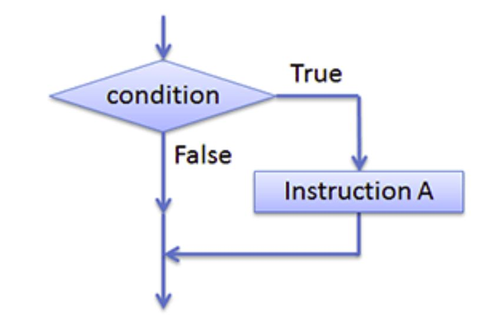
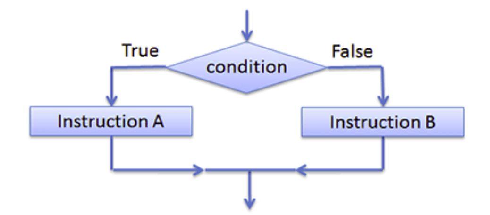

Instructions conditionnelles
Contenu
Instructions conditionnelles¶
Les instructions conditionnelles sont un moyen de contrôler la logique et le déroulement de votre script avec des conditions
Les instructions conditionnelles
En language Python, les trois principales structures de test sont les suivantes :
Instruction conditionnelle if
Instruction conditionnelle if else
Instruction conditionnelle if elseif
1.1 Instruction conditionnelle if¶
La première est la plus simple contenant juste if :
if condition:
instructions

Pour la structure simple if: si la condition est vrai, le bloc d’instructions en dessous est exécuté. Sinon, il ne sera pas exécuté.
x = 10
# la condition est x<15
if x < 15:
print(x, "est plus petit que 15")
10 est plus petit que 15
x = 10
# la condition est x==15
if x == 15:
print(x, "est egale a 15")
1.2 Instruction conditionnelle if else¶
La deuxième fait apparaitre else :
if condition:
instructions_1
else:
instructions_2

Pour la structure
if...else: si la condition deifest vrai, le bloc d’instructions en dessous deifsera exécuté. Sinon, le bloc en dessous deelsesera exécuté.
x = 10
# la condition est x<10
if x < 10:
print(x, "est plus grand que 10")
else:
print(x, "est plus petit ou égale à 10")
10 est plus petit ou égale à 10
Exercice
Écrivez un programme en Python qui demande à l’utilisateur d’entrer un nombre. En fonction de la valeur saisie, le programme doit déterminer si le nombre est positif, négatif. Ensuite, le programme doit afficher un message approprié indiquant la classification du nombre.
Exercice
Écrivez un programme en Python qui demande à l’utilisateur de saisir une note entre 0 et 20. Ensuite, le programme doit afficher la mention correspondante en fonction de la note obtenue (V ou NV)
Exercice
Écrivez un programme en Python qui demande à l’utilisateur de saisir un nombre entier. Ensuite, le programme doit afficher si le nombre est pair ou impair.
Exercice
Écrivez un programme qui demande à l’utilisateur d’entrer son âge. Le programme doit déterminer si l’utilisateur est éligible pour voter (âge >= 18) et afficher un message approprié.
Exercice
Écrivez un code qui demande à l’utilisateur d’entrer un mot de passe. Le programme doit comparer le mot de passe saisi avec un mot de passe prédéfini. Si le mot de passe est correct, affichez un message indiquant que l’accès est autorisé, sinon, affichez un message indiquant que le mot de passe est incorrect.
Utilisez une constante pour stocker le mot de passe prédéfini.
Exercice
Écrivez un programme qui demande à l’utilisateur d’entrer son nom d’utilisateur et son mot de passe. Le programme doit comparer ces informations avec des valeurs prédéfinies. Si les informations sont correctes, affichez un message d’authentification réussie ; sinon, affichez un message d’échec d’authentification.
Utilisez des constantes pour stocker le nom d’utilisateur et le mot de passe prédéfinis.
1.3 Instruction conditionnelle if elseif¶
La dernière fait apparaitre
elif:
if condition_1:
Bloc d'instructions 1
elif condition_2:
Bloc d'instructions 2
elif condition_3:
Bloc d'instructions 3
...
elif condition_n:
Bloc d'instructions n
else:
Bloc d'instructions n+1
x = 10
# la condition est x>10
if x > 10:
print(x, "est plus grand que 10")
elif x < 10:
print(x, "est plus petit ou égale à 10")
else:
print(x, "est égale à 10")
10 est égale à 10
Exercice
Écrivez un programme qui demande à l’utilisateur de saisir deux nombres. Ensuite, le programme doit déterminer et afficher quel nombre est le plus grand.
Exercice
Ecrire le code qui permet de demander l’âge d’une personne et d’afficher dans la console si une personne est un enfant, ou un adolescent, ou une personne est un adulte
Exercice
Un cinéma pratique trois types de tarifs pour deux personnes :
si les deux personnes sont mineures, elles payent 65 DH chacune,
si l’une seulement est mineure, elles payent un tarif de groupe de 150 DH,
si les deux personnes sont majeures, elles payent 190 DH en tout.
Écrire un programme qui demande l’âge de chacune des personnes,et affiche dans la console le prix à payer.